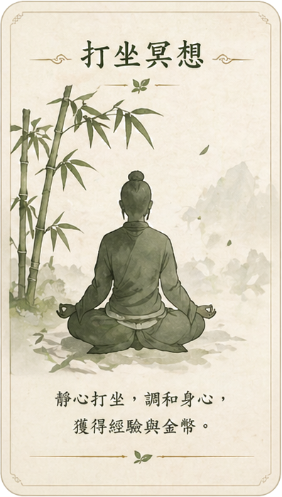
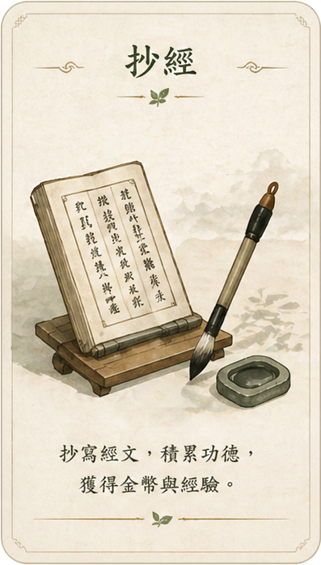
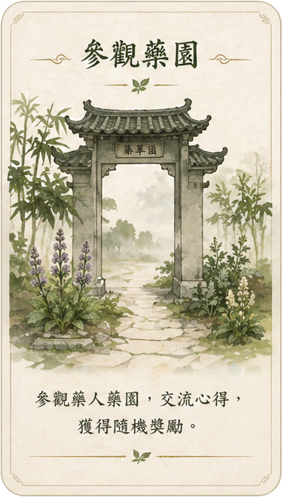

小六命理網
靜心 · 養生 · 好運來
神農藥草園
靜心種植小遊戲
等級
1
級
金幣
0
經驗值
0
/
100
我的藥草園
點擊成熟藥草即可收穫；尚未成熟時，可修心養性獲得小獎勵。
重置
初階藥園
Lv.1
山谷藥圃
Lv.8 解鎖
灶香藥田
Lv.15 解鎖
桃源藥谷
Lv.22 解鎖
修心養性與食養
等待藥草成熟時，可靜心、抄經，也可進入食養廚房

打坐冥想
調息靜心，獲得經驗

抄經
照句輸入，積累功德
🍲
食養廚房
跟著步驟完成第一道食譜

參觀藥園
隨機學習養生知識
選擇要種植的藥草
不同藥草的成熟時間、解鎖等級與收穫獎勵不同。V2 版本已加入 8 種藥草植物。
取消